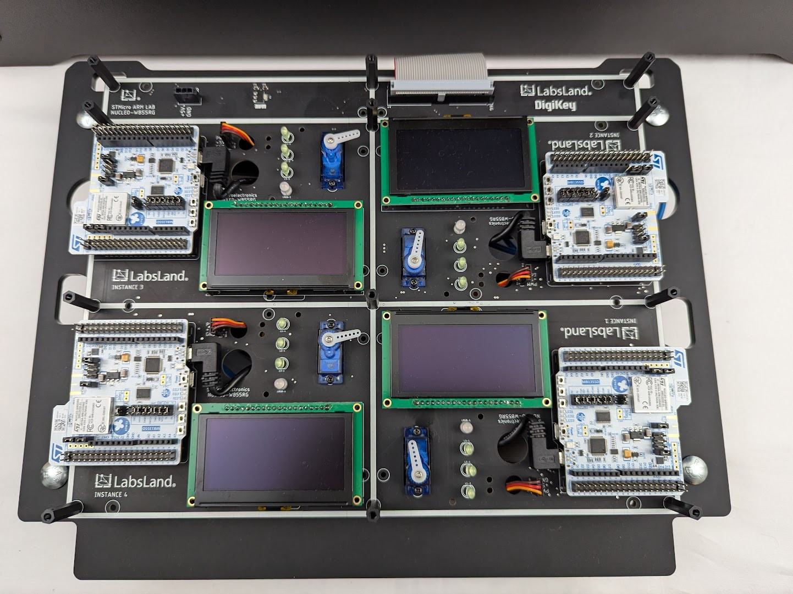
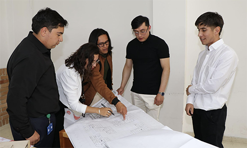
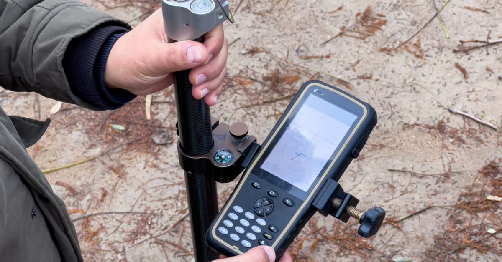

Reseña Histórica
Fundado en la Universidad de la Amazonia, nuestro semillero nació con el propósito de fortalecer las competencias investigativas en el programa de Ingeniería de Sistemas.
Transformando ideas en soluciones para el futuro de la ingeniería.
Nuestro semillero es un espacio de formación académica y científica donde estudiantes de Ingeniería de Sistemas exploran nuevas tecnologías y desarrollan proyectos con impacto social y técnico.
Fundado en la Universidad de la Amazonia, nuestro semillero nació con el propósito de fortalecer las competencias investigativas en el programa de Ingeniería de Sistemas.
Fomentar la cultura investigativa mediante el desarrollo de proyectos tecnológicos innovadores.
Para el año 2030, seremos un referente regional en investigación aplicada y desarrollo de software.
Nuestras principales áreas de enfoque son:
Participa en nuestras actividades de divulgación y aprendizaje científico.
Fecha: 15 de abril de 2026
Hora: 2:00 PM
Lugar: Laboratorio 302
Un espacio práctico para aprender el uso avanzado de CSS Grid y Flexbox en proyectos reales.
Inscribirse
Fecha: 22 de mayo de 2026
Hora: 9:00 AM
Lugar: Auditorio Ángel Cuniberti
Charla magistral sobre las nuevas fronteras de la Inteligencia Artificial y la visión tecnológica regional.
Más información
Fecha: 10 de junio de 2026
Hora: 8:00 AM
Lugar: Campus Universitario
Competencia intensiva de desarrollo de software para solucionar problemas ambientales del Caquetá.
ParticiparGrupos especializados que impulsan la innovación en diferentes áreas tecnológicas.
Enfocados en arquitecturas escalables y experiencias de usuario modernas.
Líder de Desarrollo
Desarrollador Frontend
Investigación en modelos de aprendizaje automático y procesamiento de datos.
Investigadora Principal
Analista de Datos
Impacto y soluciones generadas a través de nuestros proyectos científicos en la región.
Descripción: Implementación de sensores IoT para el análisis del ecosistema amazónico en tiempo real.
Resultado: Reducción del 15% en el tiempo de respuesta ante alertas ambientales.
Descripción: Desarrollo de software para mejorar la logística de transporte en comunidades apartadas.
Resultado: Prototipo funcional validado en tres municipios del Caquetá.
Publicaciones, ponencias y material técnico generado por el semillero.
| Título del Producto | Autor(es) | Año | Recurso |
|---|---|---|---|
| Fundamentos de Programación Web | Ana Martínez, Carlos Ruiz | 2025 | Descargar PDF |
| IA aplicada a la Bio-Diversidad | Elena Gómez | 2026 | Ver Artículo |
| Avances en Cloud Computing | Luis Tovar | 2026 | Descargar PDF |
Momentos destacados de nuestras jornadas de investigación y práctica.



¿Tienes dudas o quieres unirte a CodeHorizon? ¡Escríbenos y potencia tu futuro!
Correo: S.castellanos@udla.edu.co
Universidad de la Amazonia - Sede Porvenir
Florencia, Caquetá, Colombia
{kind=link}
{kind=link}
{kind=link}
{kind=link}